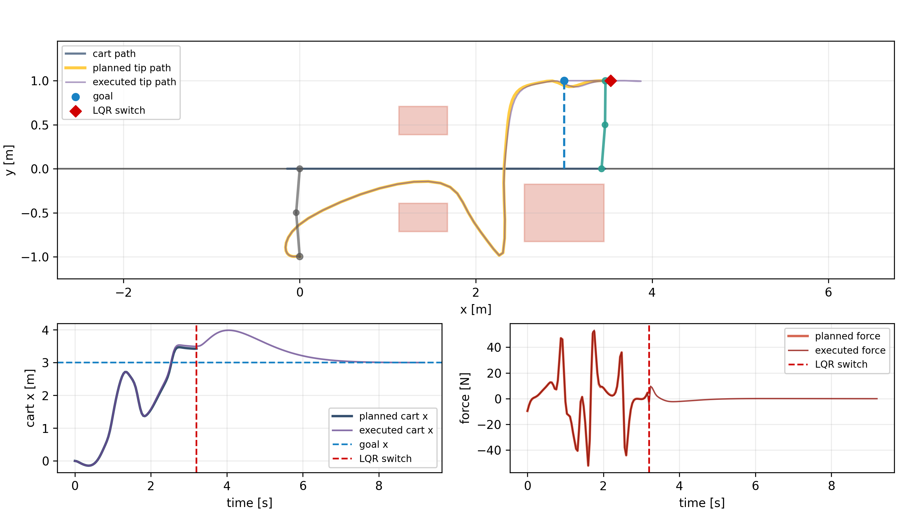
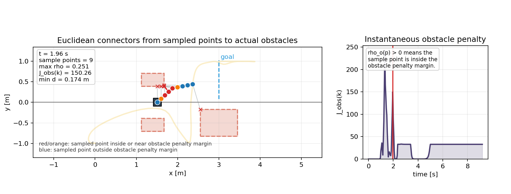
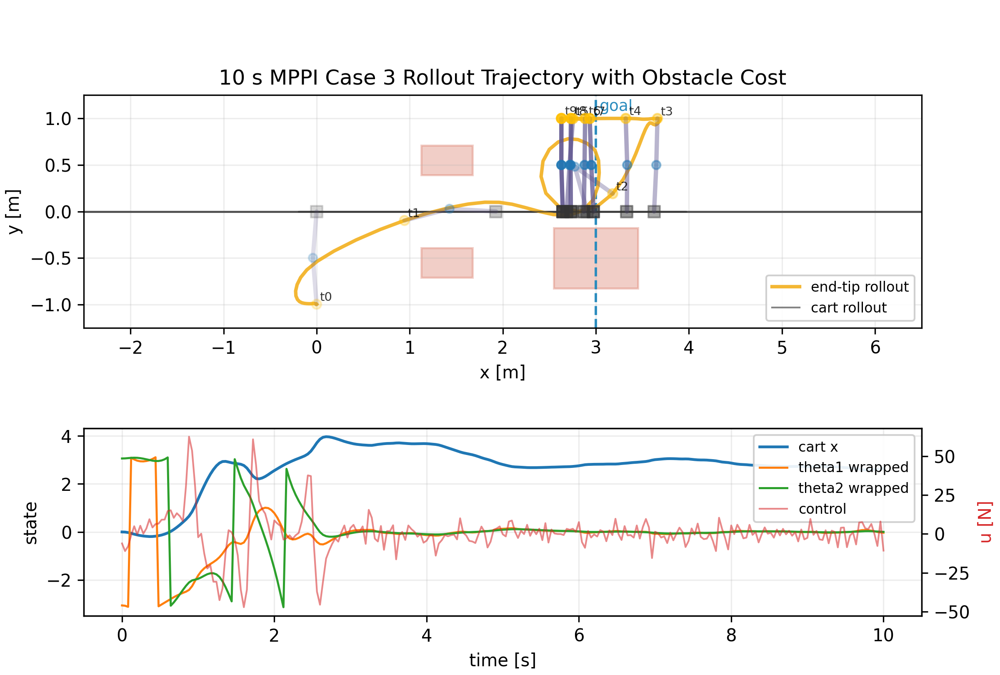

Trajectory Optimization
A finite-horizon nonlinear program plans a dynamically feasible swing-up trajectory using the full cart double-pendulum dynamics and bounded cart force.
Advanced Robotics Course Project
A compact project page for the trajectory-optimization, LQR stabilization, obstacle-aware planning, and MPPI experiments in this repository.
Project Summary
The double inverted pendulum cart is a strongly nonlinear, underactuated benchmark: a single horizontal force must move the cart while indirectly coordinating two pendulum links. This project treats swing-up as a global optimal-control problem and terminal balancing as a local feedback problem.
The current implementation combines direct nonlinear trajectory optimization, workspace obstacle penalties over sampled body points, and LQR-based terminal stabilization. Additional MPPI experiments explore receding-horizon sampling control and reference-guided rollout behavior under the same cart-pendulum model.
Method
A finite-horizon nonlinear program plans a dynamically feasible swing-up trajectory using the full cart double-pendulum dynamics and bounded cart force.
Local Riccati feedback is used where linearization is meaningful: tracking the planned motion and holding the unstable upright equilibrium after arrival.
Smooth penalties are evaluated on cart and link sample points so the optimizer receives a geometric signal when the body approaches rectangular obstacles.
Sampling-based receding-horizon control tests whether randomized force sequences can discover swing-up behavior under shaped costs and reference guidance.
Results
Nominal swing-up
The optimizer finds a large-amplitude maneuver that moves the underactuated system from the downward configuration to the upright neighborhood.
Obstacle-aware TO + LQR
The sampled-body obstacle penalty changes the terminal approach while the LQR handoff damps the remaining motion near upright.
Reference-guided MPPI
The yellow trace shows the realized end-tip rollout, while the overlaid prediction paths show the horizon used by MPPI to update the next cart-force sequence.
Diagnostics


